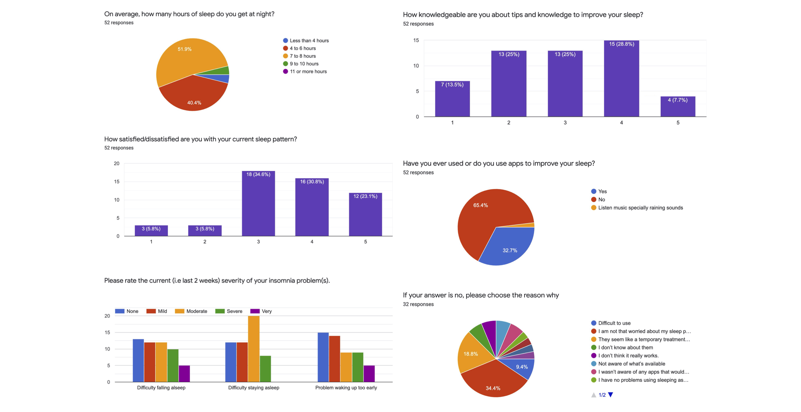
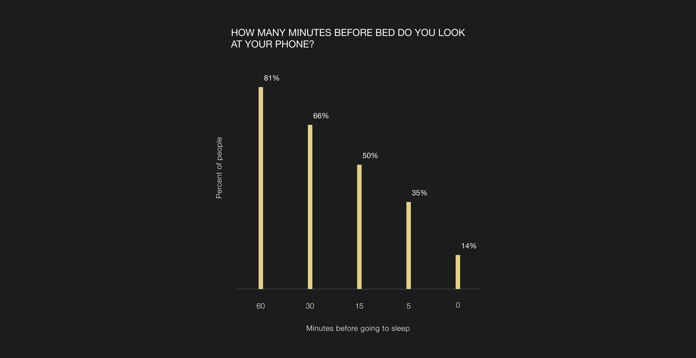
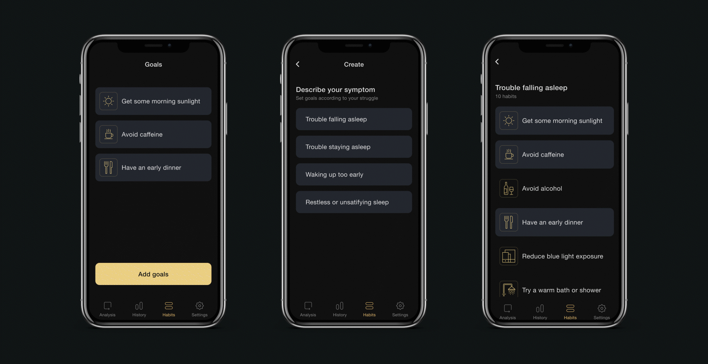
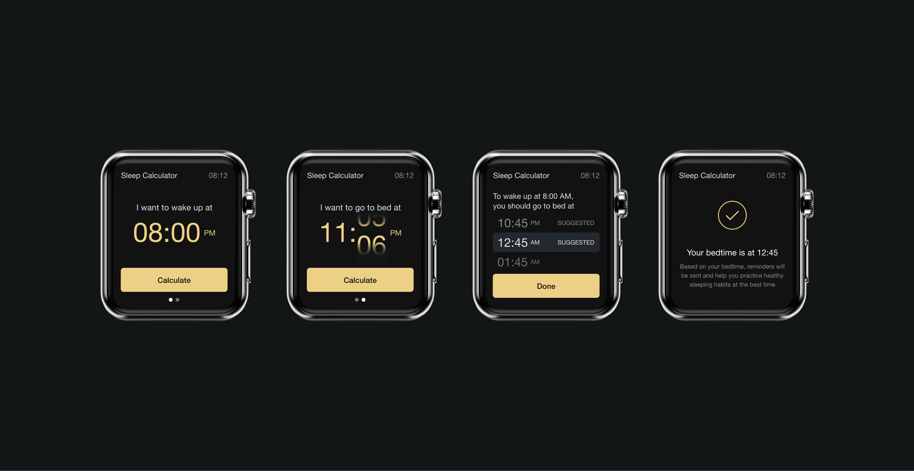
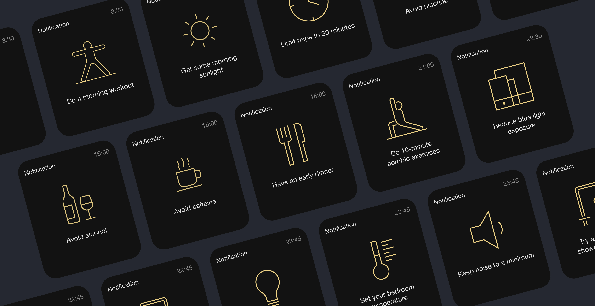
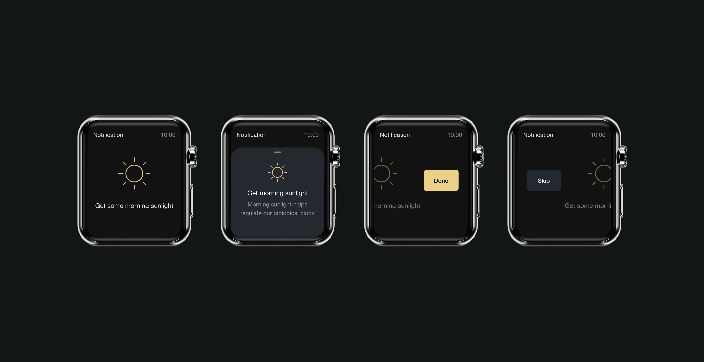
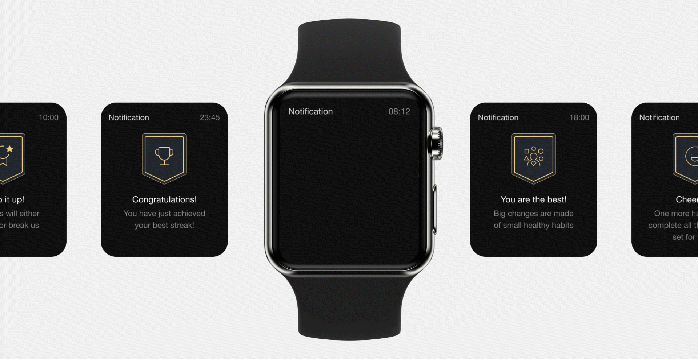

01/
Problem
More than a third of American adults are not getting enough sleep on a regular basis.
2020
More than a third of American adults are not getting enough sleep on a regular basis.
After conducting a questionnaire study, the results reflected that 80.7% of the participants have one or more problems with their sleep. 61.5% of the studied group are familiar with tips and/or are knowledgeable of how to improve their sleep, however only 11.6% of participants are satisfied with their current sleep patterns.

According to a survey conducted by Deloitte, 81% of people use their phones within an hour before bedtime, even when the majority knows it can disturb the quality of their sleep.

If lifestyle and unhealthy sleep habits are the cause of insomnia, there are cognitive behavioral techniques and sleep hygiene tips that can help. Endsomnia aims to help users break unhealthy sleeping habits and create better ones for a good night's rest.
Users are able to interact with the "Analysis" page by scrolling through time and being able to see their sleep stages. The circle changes colors based on the cycle of sleep they are in at any given time. Users also have access to sleep data and history which reflects the user's participation. The available information will help track and continuously achieve their set goals.


On the "Habit" page, users will be asked to select their insomnia symptoms in order to receive tailored reminders dependant on their selections. After identifying their insomnia problems, users will be able to select goals to work on to improve their sleep.


Clicking on each goal on the "Habit" page allows users to briefly see and learn about the advantages of performing each habit. Users are also able to track their progress.

When users input their desired wake up or bed time, Endomnia then provides suggested times to optimize for their REM and non-REM sleep cycles. Based on the users goal bedtime, Endsomnia can calculate the best time to send reminders to users.

Once users set their goals, Endsomnia will start to send out notifications and remind them to perform healthy habits and quit unhealthy ones. Endsomnia will send reminders to users and help them practice healthy sleeping habits at the best time possible. As an example, users can receive a notification 6 hours before bed to "Avoid Caffeine".

When users receive their reminders, they can slide up to see additional information and learn about the advantages of performing each habit. Users will swipe right when they accomplish a goal or swipe left to temporarily skip a reminder.

When users complete a goal, the application will send encouraging messages and motivate users to continue to achieve their dreams and build healthy habits to one day Endsomnia.
